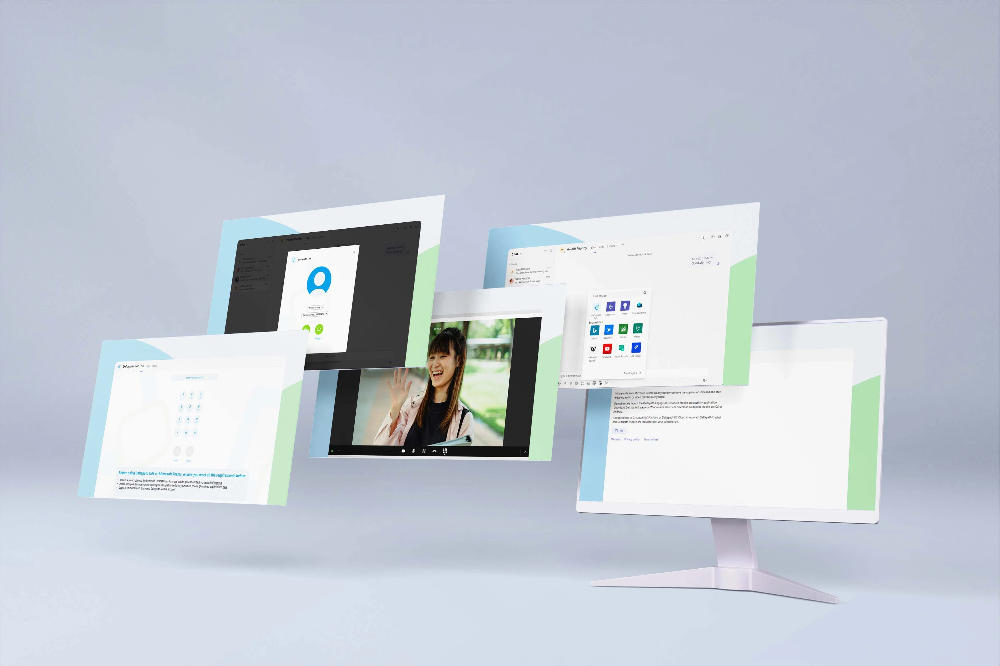

Deltapath Talk (Microsoft Teams Integration)
Initiate calls from Microsoft Teams on any device you have the application installed and start enjoying
audio or video calls from anywhere.
Outgoing calls launch the Deltapath Engage or Deltapath Mobile productivity application. Download
Deltapath Engage on Windows or macOS or download Deltapath Mobile on iOS or Android.
Go check out the app directly from your Teams app store!
Expertise
UI Design
Year
2022



Techonogies:


Problem:
Dealing with so many applications is a very big and daunting part of our daily lives. Messing with different
applications only to make a phone call is a thing of the past. In this project; I'm designing an app for the
Microsoft team to directly launch the Deltapath Engage or Deltapath Mobile productivity application.
Process:
As an app that is embedded inside Microsoft teams, it was very important that Deltapath Talk represents
their brand and not blend with the Teams app. Deltapath Talk is designed in a modern and clean design, with
the use of green, white & blue as a base for the design, and further use of colours that act as colour
coding, to differentiate between important items.
Results:
Overall, we were able to reach our goals, have gotten positive feedback from customers, and have seen an increase in conversion rate.